Pour une phénoménologie mobilisatrice
Louis Fiolleau
Club ASAP 05
janvier 2025
Temps de lecture : 10 min
Pour ma participation, je souhaite revenir sur un point évoqué dans l’introduction de ce club, où nous avons opposé deux catégories de réception émotive de l’Architecture : l’une sensorielle, l’autre intellectuelle.
D’un côté, on aurait une conception architecturale centrée sur la matérialité et les jeux volumétriques, où les observateurs quotidiens d’un bâtiment seraient associés à des réceptacles à affects. De l’autre, il y aurait des projets dont le travail typo-morphologique particulièrement poussé ou la finesse du détail technique seraient d’autant plus captivant intellectuellement (notamment pour les acteurs du champ disciplinaire, on ne va pas se mentir). L’architecture, au-delà de ces caractéristiques fonctionnelles, pourrait donc s’affairer à générer une émotion esthétique et/ou une satisfaction techniciste.
Émotion sensorielle et émotion intellectuelle
Je voudrais, ici, retravailler cette dichotomie dans un objectif particulier : celui de comprendre comment les caractéristiques esthétiques de l’architecture peuvent mobiliser, non pas une admiration savante des pairs mais plutôt une intelligence d’occupation spatiale spontanée chez des individus profanes.
Autrement dit, comment l’émotion suscitée par l’architecture peut-elle être un vecteur de contestation et d’émancipation ?
Poser cette question induit nécessairement que la phénoménologie telle qu’elle est convoquée, de façon hégémonique chez les architectes, ne tente pas vraiment de remplir cette tâche. Partons donc des maîtres dans le domaine. Herzog et de Meuron, qui se disaient eux-mêmes "phénoménologues", cherchaient une conception où "une surface devient spatiale" car, pour eux, c’est bien là où "la surface devient attractive". Les façades en verre sérigraphié de l’hôpital cantonal et le béton ratissé du Schlaulager à Bâle, par exemple, présentent différentes échelles de perception selon que l’on est à distance ou près, comme devant un tableau.
L'enjeu est de captiver l’usager dans une énigme visuelle, en révélant ce que l'architecte Adam Caruso appelle "la vie secrète qui réside dans tout matériau". Les architectes phénoménologues, comme Herzog et de Meuron, refusent alors les signes et recherchent souvent l’expérience immédiate, universelle et de fait, naïve.
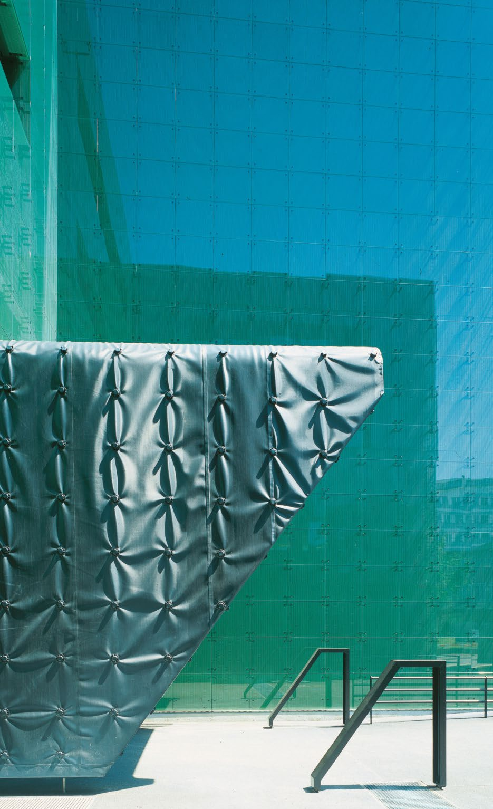
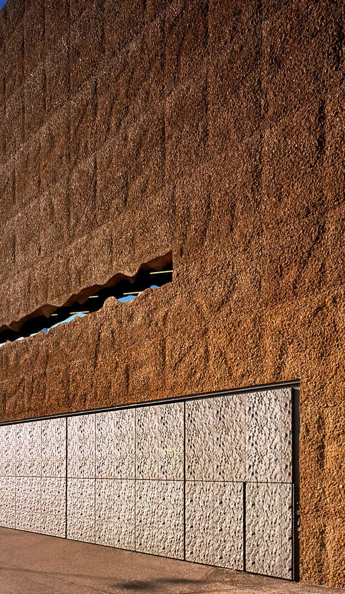
Dans l’essai L’art impossible, Geoffroy de Lagasnerie, s’appuyant sur une lecture bourdesienne, critiquait cette croyance selon laquelle "On pense qu’il existe une capacité
esthétique ou émotionnelle universelle, cachée à fond de nous qu’il faudrait laisser s’exprimer sans codes, contre les attentes, les censures sociales." Selon lui, une approche purement esthétisante (comme celle de Herzog et de Meuron) n’est en réalité qu’un loisir de classe, inhibant de fait les affects contestataires chez le spectateur. Bien sûr, il serait exagéré d’affirmer que les architectes phénoménologues visent à paralyser la critique de ceux qui utilisent leurs bâtiments. Cependant, en cherchant à nous rapprocher émotionnellement de l’architecture, cette approche nous met paradoxalement à distance de notre capacité à agir sur le matière du bâtiment. Pour Kersten Geers de Office, une "architecture visant une approche phénoménologique" le fait "peut être malgré son programme". Et c’est bien là le point critiquable : sous couvert de lutte contre un fonctionnalisme infécond sur la plan créatif, les architectes se prennent alors au jeu de l’objet d’art, non mécontents d’ailleurs de la plus-value qu’il offre à l’image de leur bâtiment.
On cherchera alors à réorienter la réception émotive de l’architecture vers un objectif qui nous intéresse davantage : l’utilisation spontanée et émancipatrice des espaces. Pour ce faire, il faut changer de lunettes vis-à-vis de la question des affects. L’affect, pour Herzog et de Meuron et compagnie semble être perçu comme un simple degré émotionnel qui perturbe l’individu dans son être profond. En résulte, une vision volontairement aveugle sur les effets de leurs architectures. L’important est de toucher l’âme.
On préféra la lecture qu’en fait le philosophe et économiste Frédéric Lordon, philosophe et économiste : les affects seraient directement liés à la puissance d’agir de l’individu. Ainsi, les actions (ou inactions d’ailleurs) sont guidées les désirs et les affects. Autre chose : ces affects ne flottent pas dans l’air, ils sont ancrés dans les conditions matérielles de l’individu. Par exemple, un affect de révolte peut être déterminé en partie par des conditions d’existence précaires. Et de fait, l’espace et son usage ont à faire avec les conditions matérielles d'existence.
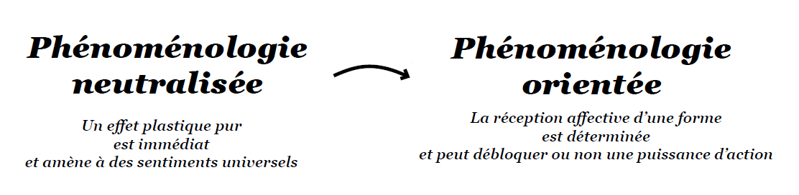
La distance que nous cherchons à instaurer avec la phénoménologie classique pourrait s’inspirer de l’opposition entre le théâtre épique et le théâtre dramatique, initié par Bertolt Brecht au début du XXème siècle. Après avoir constaté l’utilisation du théâtre par la propagande nazie, Brecht proposa, dans les années 1930, de rompre avec les codes académiques du théâtre. Selon lui, le théâtre dramatique ne pouvait aboutir qu’à l’immobilisation du
spectateur, car le récit linéaire et inaltérable limitait le public à une identification immédiate avec ce qui se passait sur scène. Jacques Lucan disait quelque chose de similaire en ce qui concerne l’architecture phénoménologique : "La perception sera immédiate, l’effet produit sera immédiat, mais épuisé aussitôt que ressenti".
Brecht propose alors un théâtre qui suscite l’étonnement du public, l’amène à se confronter à ses propres conditions matérielles d’existence, et mobilise ainsi ses affects révolutionnaires. Par des interruptions dans le récit, un découpage en scènes indépendantes, en montrant les changements de décor ou en brisant le quatrième mur, le théâtre épique cherche à provoquer un suspens esthétique, une distanciation critique chez le public qui découvre alors les moyens de sa propre action sur le réel : les outils potentiels de son émancipation.
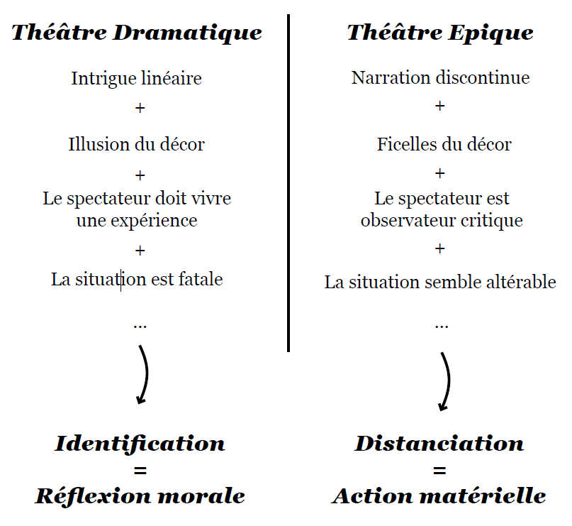
Suspens esthétique pour l'Architecture ?
Comment créer cette distanciation ou ce suspens esthétique en architecture ? Une première piste pourrait résider dans les formes froides et cruelles décrites dans les travaux de Can Onaner ou représentées dans les premiers projets de Dogma. Les références sont récurrentes, allant des logements au caractère brutal d’Aldo Rossi à la ville Verticale de Ludwig Hilberseimer en passant par la co-op room de Hans Meyer. Toutes ces architectures visent à provoquer une distanciation chez les individus par une esthétique austère, empêchant justement toute prise affective positive. La rationalité exacerbée des espaces, leur langage cru, forcerait un regard critique sur l’environnement construit et pourrait catalyser un désir de révolte spontanée.
Rafael Moneo parlant des logements dessinés par Rossi à Goito et Pegognagna disait que "Il ne peut avoir d’autre lecture positive de cette architecture que celle d’une dénonciation provocatrice du caractère brutal des habitations auxquelles ont accès les citoyens à revenu modeste … cette architecture d’un minimalisme expressionniste serait justifiable seulement si la rébellion était l’intention de l’architecte."
Cette esthétisation de conditions matérielles d’existence minimale repose en partie sur la figure du caractère destructeur de Walter Benjamin. La société moderne et le développement capitaliste aurait construit un individu dépossédé d’expérience pour qui "rien n’est durable", et c’est justement "pour cette raison qu’il voit des chemins partout".
Pour Can Onaner, la rupture critique surviendrait lorsque la foule rencontre l’esthétique cruelle de l’infrastructure capitaliste, tout comme les corps des comédiens gagnaient en vitalité en rencontrant les volumes abstraits du décor d’Appia (cf introduction du club 05).
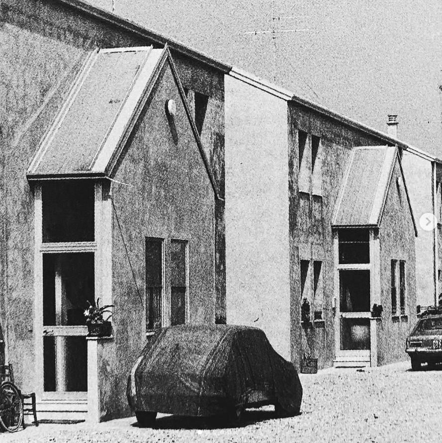
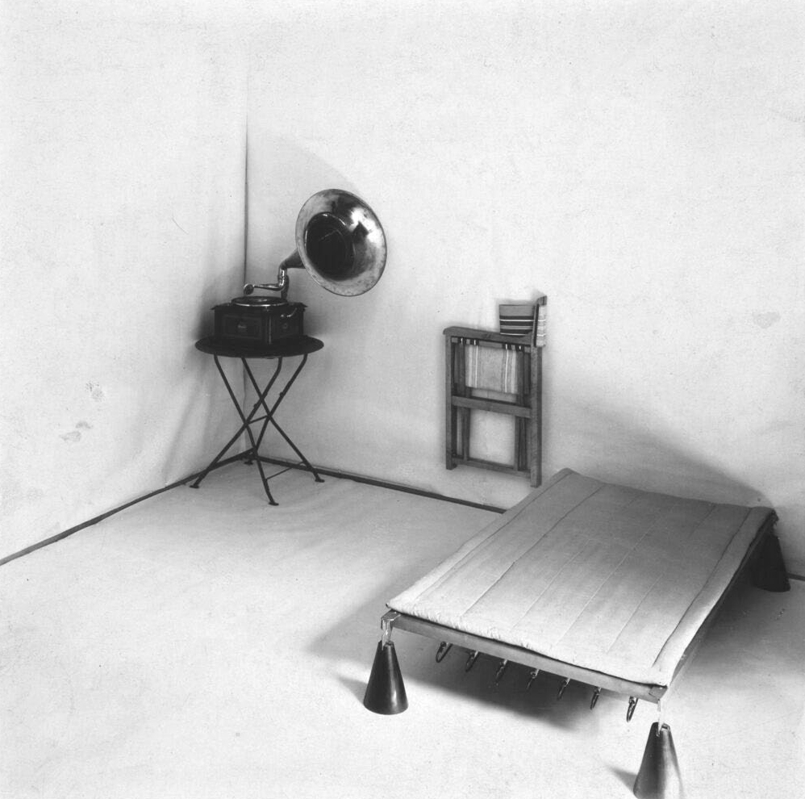
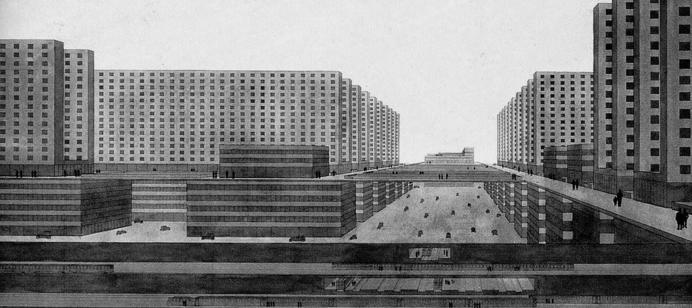
Néanmoins, le risque de faire reposer la possibilité d’une distanciation sur une rationalisation brute de l’architecture sans accroche est de tomber dans les pièges des ‘‘boîtes sans contenu’’ à la Office. La brutalité de Rossi semble aujourd’hui céder la place à une neutralité molle. Les plateaux tramés par des IPN ressemblent davantage à des plateaux de tours optimisés pour les flux de capitaux qu’à des lieux urbains à occuper.
Pour éviter cela, peut-être faudra-t-il suivre pleinement le modèle du théâtre épique. Le suspens esthétique, pour Brecht, ne peut être autosuffisant. Une fois les conditions matérielles exposées, il faut réorienter les affects vers l’action en fournissant les outils nécessaires. Comment induire ou permettre l’action par l’architecture ? Une piste serait de produire des moments où le marteau se brise, au sens qu’Heidegger en donne. C’est lorsque le marteau se casse en parties qu’on réalise en effet ses capacités matérielles intrinsèques et ses autres usages possibles : la tête du marteau permet aussi de caler une porte. Deux figures pourraient être utiles dans ce processus : la ruine et le décor.
La ruine et le décor
Loin de la figure romantique classique de la contemplation, la ruine peut aussi devenir un moyen d’action si on l’associe à l’ascétisme froid évoqué précédemment. Une architecture qui intégrerait des zones de ‘‘ruine contenue’’ (ou, inversement, de ‘‘chantier non achevé’’) offrirait plus qu’une simple mise à nu de l’infrastructure : elle permettrait de rompre avec une matérialité et un espace jusqu’alors perçue comme intangible. Gilles Delalex parle, lui, de la ruine comme le moyen de mettre en place une ‘‘adolescence programmée’’ du bâtiment. La conception spatiale et architecturale d’un lieu permettrait que les espaces ne soient perçus comme des attaches que dans le cadre d’une prise de pouvoir spontanée par une foule. Du point de vue de la lutte contre l’appropriation des espaces par le capital, la ‘‘ruine contenue’’ permettrait ainsi de créer des zones non programmées, ouverts au squats, difficiles à récupérer fonctionnellement.
L’un des aspects essentiels du théâtre épique réside dans le fait que les gestes des acteurs soient visibles tout au long de leur déroulement. Le décor y est toujours mis en avant comme un ensemble d’artifices qui, loin de se dissimuler, laissent apparaitre les moyens matériels de l’action. Moins centré sur l’esthétique de l’architecture que la notion de ruine, le décor introduit un aspect plus techniciste dans sa mise en oeuvre. Brecht, d’ailleurs, privilégiait la mise en scène de situations ordinaires et familières, ce qui rend la distanciation plus spontanée.
Peut être alors que la mobilisation d’affects pourra se faire directement depuis des configurations spatiales déjà altérés dans l’histoire récente de la révolte et l’émancipation de la multitude.
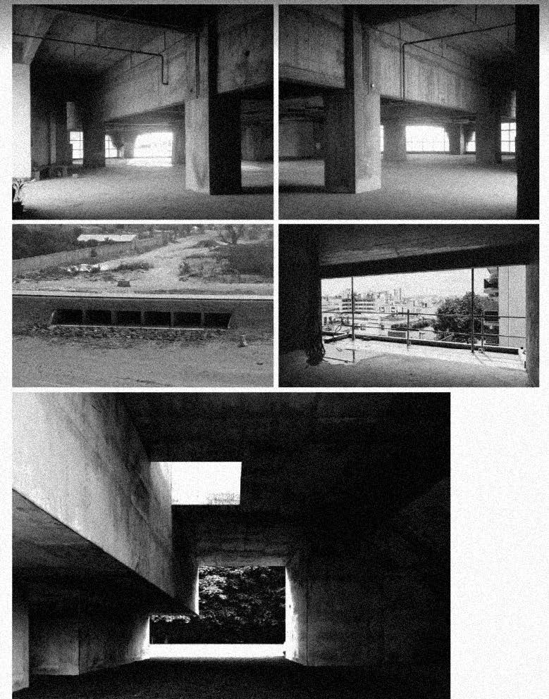
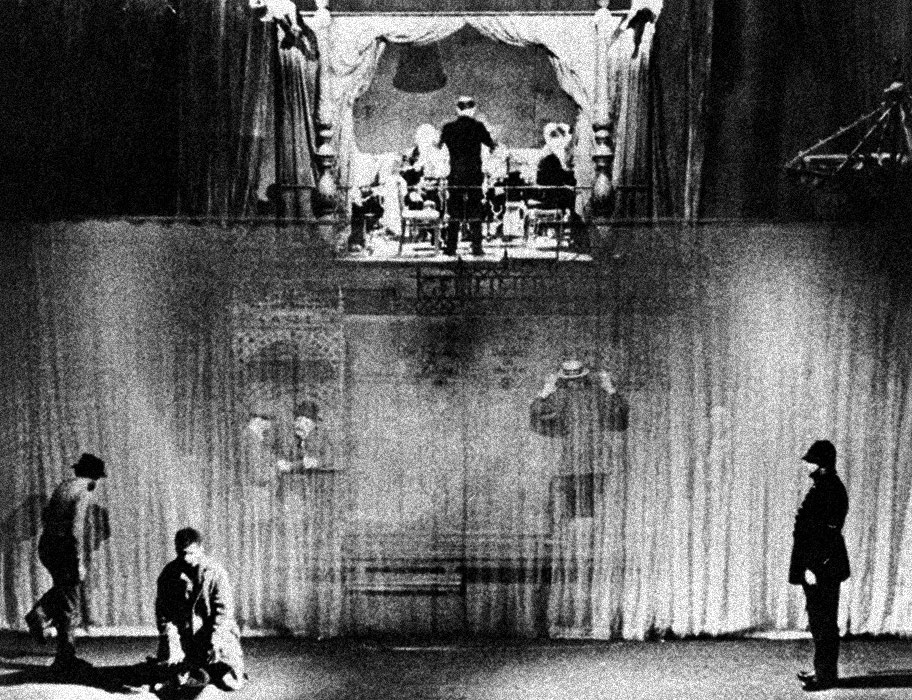
En suivant une approche inspirée de la théorie opéraïste, qui met l’accent sur l’auto-organisation des luttes de masse, il pourrait être pertinent de s’appuyer sur ‘‘l’intelligence diffuse’’ des luttes plutôt que sur les ‘’émotions intellectuelles’’ de l’architecte, si l’objectif est de ‘‘briser’’ l’architecture elle-même. Quels types de murs ont été décomposés pour créer des barricades, quelles formes de place a permis une occupation défensive de la foule, quel type d’escalier s’est transformé en tribune populaire, quelles typo-morphologie permet de d’investir et de maintenir des squats… Il s’agirait d’offrir un décor optimal pour provoquer puis permettre des luttes spontanées.
Le risque de se laisser piéger par la phénoménologie reste cependant présent. Les outils évoqués ici sont encore largement spéculatifs. Ils reposent sur la théorie que tels effets esthétiques aboutiront sans doute à telle mobilisation des affects puis à telle action émancipatrice. Cependant, comme l’affirme Frédéric Lordon, la politique est avant tout une question d’affects Si la commande de nouveaux clubs de travailleurs ou de maisons du peuple dépend de facteurs qui échappent en grande partie à l’architecte, peut-être que l’un de ses rôles d’un point de vue révolutionnaire devrait être d’ordre affectif.
Alors pour le cloisonnement des structures cruelles en béton, on préfèrera sans doute la brique au placo, non pas dans le but de rappeler la souche de cheminées de la maison familiale ou quelconque vie secrète du matériau, mais parce qu’elle est la taille de la main qu’elle est facile à entasser et à jeter.
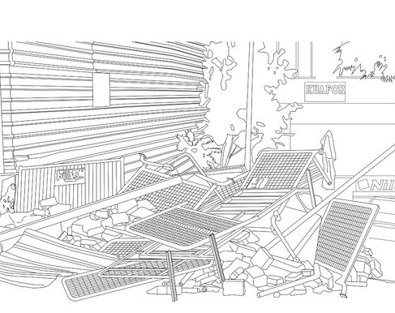
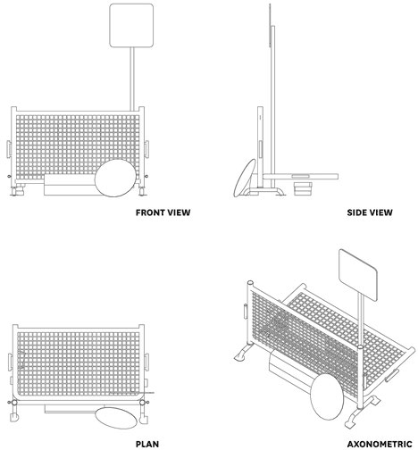
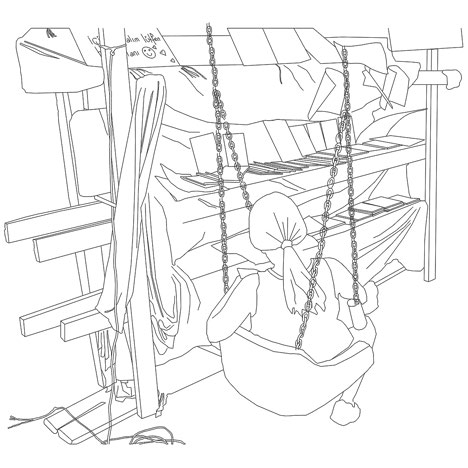
L'ensemble des articles issus du club asap 05 sont disponibles ci-dessous:
| # | Titre | Auteur | |
|---|---|---|---|
| 500 | Quatres problématiques et une intuition | ASAP | Club #05 |
| 501 | Mary la super-architecte | Theodora Barna | Club #05 |
| 502 | Attentes et résolutions | Sirine Ammour | Club #05 |
| 503 | Neurarchi | Marie Frediani | Club #05 |
| 504 | Le perturbant dans l'architecture | Cristiano Gerardi | Club #05 |
| 505 | Habiter l'espace | Lucrezia Guadagno | Club #05 |
| 506 | Icone et mémoire collective | Sacha Nicolas | Club #05 |
| 507 | Perspectives don't care about your feelings ? | Basile Sordet | Club #05 |
| 508 | Pour une phénoménologie mobilisatrice | Louis Fiolleau | Club #05 |